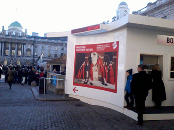
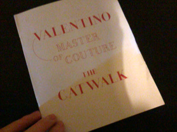
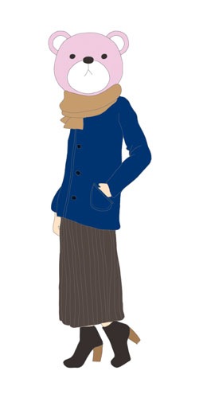

Valentino - Master of Couture
@Somerset House
9월부터 Somerset House 주말마나 신나게 들락거렸다^^
올해 하반기 전시 잼난거 많아서 행복//ㅅ//
이번주에 댕겨온건 발렌티노 전시회
일요일이라 그런지 사람 너무 많았음 ;ㅂ;
게다가 전시장을 패션쇼 런웨이처럼 길고 좁게 만들어놔서
사람 순환도 무진장 느렸다 ;ㅂ;
130벌이 넘는 의상들이 전시되어있었는데
60년대 디자인한 의상들이 지금봐도 촌스러운느낌히 하나도없다 +_+
그리고 전시회 온 사람들도 절대 '업계종사자'포쓰를 풍기는
사람들이 많아서 옷입은거 구경하는 재미도 쏠쏠^^
내 바로 앞 두 - 30대후반정도 되어보이는 - 남자분들은
현재 디자인 일을 하고계신건지
계속 스케치를 하고 메모를 하고 둘이서 이야기를 하는모습이
야 니들 사귀지.......가아니라 진지해보여서 좋았다는 그런것입니다;;;
+

최근 마이 붐은 롱스커트
샤랄라(.....;;;;) 한거 하나 사놨는데 아직 개시는 몬했다 ㅜㅜ
2012 올해 나의 집착(.....)은 치마로 시작해서 치마로 끝나는고나OTL
전시 다 구경하고 오랜만에 필(?)받아서
셀프리지로 직행
옷구경 가방구경 악세사리 구경도 하고
시착도 하고싶었으나
연말 - 일요일에 센트럴을 나간 내가 미친게지 ㅡㅡ;;;;;
사람에게 낑겨서 거북이보다 느린속도로 이동하고있는데
뒤에서 전화통화하면서 걸어오는 아가가
"아니 왜 크리스마스/연말로 최고 바쁜 시기에 왜 하필 센트럴에서 만나자고 한거야"
라고 친구로 추정되는 상대방에게 버럭버럭 화를 내고있는걸 들었다
음 ㅡㅡ;; 동감이야;;;; 이 시기에는 센트럴에 나가면 안돼;;;;;
+
내일은
Matthew Bourne's Sleeping Beauty
금요일은
Gary Numan 공연 +_+
일주일에 볼 공연이 두개야!!! 씐나!!!
그럼 요거 기다리믄서 다시 로동 XD